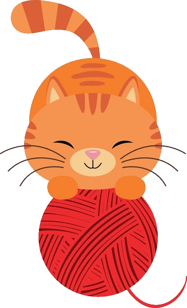
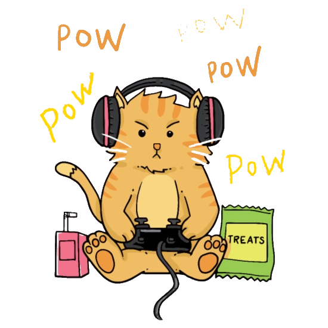

Щастя в простих речах
Нерідко буває так, що вир переживань, побоювань і тривог ніби затягує тебе всередину. В такі моменти важливо згадати, що в твоєму житті є місце приємним і теплим моментам. Пропоную тобі пригадати, що саме робить твоє життя кращим:

- Прогулянки
- Відпочинок з друзями
- Цікава книжка
- Гра з домашнім улюбленцем
- Вечір в родинному колі
- Спілкування з близькими
- Час для себе
- Комп’ютерні ігри
- Чашка чаю та смаколик
- Перегляд фільмів
- Улюблене хобі

Продовжуй цей перелік та обирай, що підходить саме для тебе. Не забувай кожного дня приділяти час тому, що приносить тобі радість. І навіть не думай казати, що це «не на часі», бо коли, як не зараз.
Ти не один
Іноді може здаватися, що тобі немає з ким поділитися думками або звернутися за допомогою. Пропоную тобі намалювати кола підтримки. Згадай, як у літній день кидаєш камінці в річку, а від них по воді розходяться кола і сягають середини ріки. Так і підтримку можна отримати і від тих, хто безпосередньо поруч, і від людей, які знаходяться далеко, бо сучасні технології з легкістю долають відстань. У ближніх колах можуть бути батьки, брат або сестра, бабуся або дідусь, інші родичі, твої найкращі друзі. В наступних колах можуть бути однокласники, хлопці та дівчата, з якими ти разом ходиш на тренування, чи в музичну школу, чи на заняття з англійської або ті, хто живе по-сусідству. А ще ти можеш звертатися до свого вчителя, тренера, шкільного психолога. Якщо з якихось причин ти не хочеш ділитися своїми думками з близькими та знайомими людьми, пам’ятай, що існують гарячі лінії та консультації онлайн для підлітків (перелік посилань дивись нижче). Намалюй своє коло, тоді ти зможеш побачити й відчути, що навколо тебе існує чимало людей, до яких ти можеш звертатися, а не залишатися на самоті.

Сервіси допомоги:
- ПОРУЧ – онлайн групи підтримки для підлітків, консультації на платформі ZOOM
- Не дрібниці – телеграм-бот для підтримки емоційного та ментального здоров'я
- Teenergizer – конфеденційна та безкоштовна підтрика дл підлітків